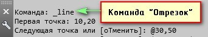
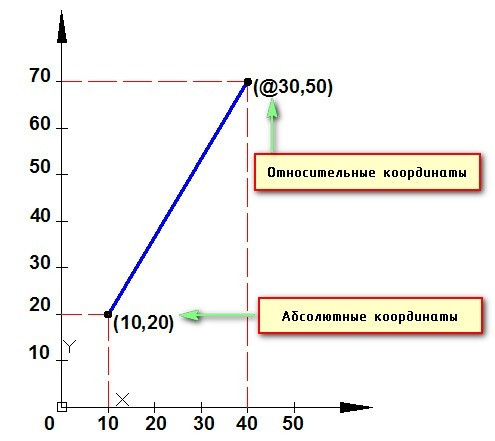
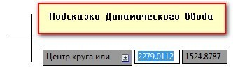
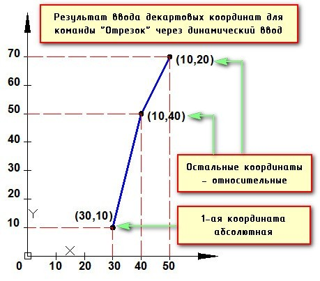

Задание координат в Автокаде является необходимым условием для обеспечения точности построений. Наши обзоры Автокада для "чайников" помогут вам разобраться детальнее.
Как задавать координаты в автокаде? Какие бывают координаты?
В AutoCAD используется две системы координат – декартовая и полярная. Координаты в Автокаде бывают относительные и абсолютные.
В декартовой системе отсчета точки задаются двумя координатами X и Y, которые следует вводить через запятую. Форма записи декартовых координат: (100, 50).
Что касается абсолютных и относительных координат в Автокаде (Аutocad), то в первом случае отсчет осуществляется от начала координат, точки (0,0). Если же они относительные, то от последней поставленной точки. На относительность указывает знак @ в командной строке.
Рассмотрим это на примере. Выберем команду отрезок и введем координаты в Автокаде, как показано на рис.:
 Как видно, у первой точки отрезка координаты заданы абсолютные (х = 10, y = 20). Т.е. отсчет ведется от начала координат. Координаты второй точки заданы по отношению к первой. А значит, начало отсчета как бы перемещается в точку (10,20), значения откладываются уже от нее. На относительность указывает знак @. Когда речь идет о полярных координатах, то задаются два параметра: длина отрезка L и угол А между положительным направление оси X и этим отрезком. Форма записи для командной строки L.Результат будет выглядеть следующим образом:
Построение по координатам в Автокаде и ввод координат в Автокад
Ввод координат в Автокаде осуществляется непосредственно в командной строке. Также можно использовать динамический ввод. Результат будет один и тот же.
Динамический ввод является аналогом командной строки. Подсказки возле курсора отображают динамически обновляемую информацию. Когда выбрана какая-либо команда, то можно вводить координаты или задавать параметры.
Последовательность действий при построении будет следующая: 1) Указать длину отрезка (в нашем случае 100). 2) Нажать Tab. 3) Ввести значение угла 330. Нажать Enter. Если данное построение выполнять через командную строку, то форма записи будет выглядеть следующим образом: 100 меньше 330 Что касается декартовых координат и их ввода через динамический ввод, то форма записи остается прежней (х,y). Однако по умолчанию первая точка будет абсолютной, а последующие – относительными. Никакого дополнительного знака ставить не требуется.
